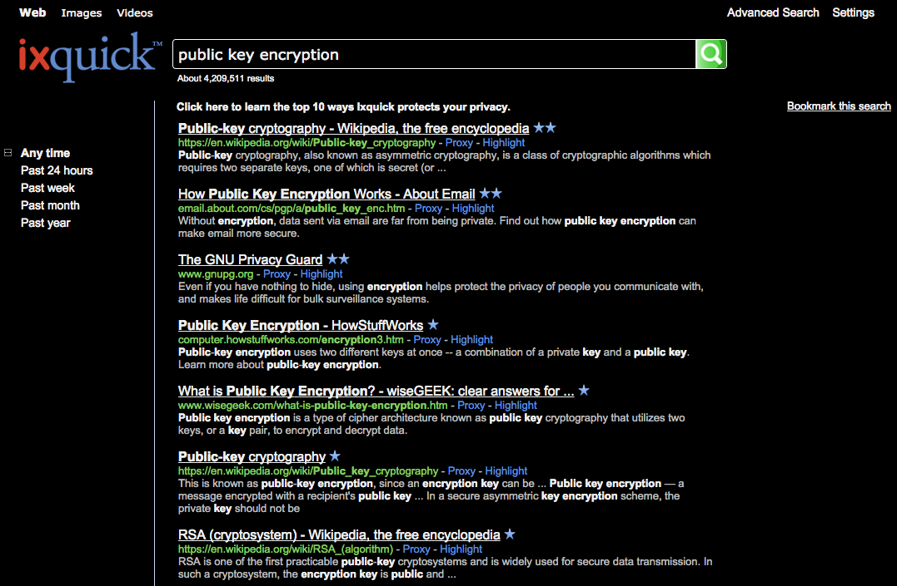

Search Engines
DuckDuckGo
DuckDuckGo is a search engine driven by community – you’re on the team!
- Real Privacy We don’t track you. What you search for is your own business and we’d like to keep it that way. That’s why we don’t collect any personal information and therefore, have none to share.
- Smarter Search Get answers quicker. We help you get where you want to go in fewer clicks. We do that through instant answers, keyboard shortcuts and !bangs. You can even help improve your search engine!
- Less Clutter Fewer ads and reduced spam. With search our only focus, we are dedicated to delivering you a clutter-free interface that you can fully customize to your liking or apply one of our preset themes.
Screenshots
Above: Search results on DuckDuckGo
Website
Visit the website
ixQuick
Ixquick does not collect or share any personal information. Ixquick search results are more comprehensive and more accurate than other search engines. Ixquick's unique capabilities include an Advanced Search, a global search and power refinement.
When you search with Ixquick search engine, you are searching many popular search engines simultaneously and anonymously. Combined, these engines cover more of the Internet than any one search engine alone.
Screenshots
 Above: Search results on ixQuick
Website
Visit the website